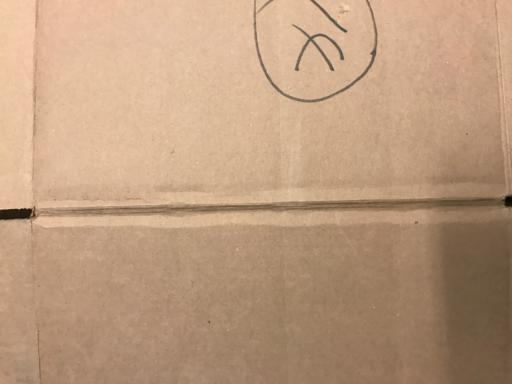
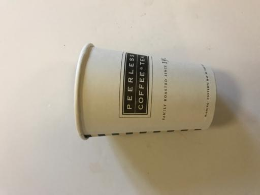
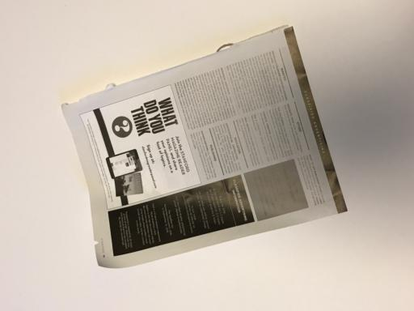

Biodegradable & Non - Biodegradable

What?
Technology has improved the quality of life and given birth to an advanced form of life. This has varying impact on the environment and other lives on the earth. For instance, water bottels made of plastic, which is convenient to use and carry but its disposal is a challenge for nature. There are lots of waste materials which are degradable and non- degradable.
Therefore, categorization and proper disposal of waste are necessary. Waste materials can be classified as biodegradable and non-biodegradable. Risk and threats related to waste disposals can be easily avoided by the knowledge on types of wastes.
Why?
There is need to segregate the wastes because the wastes may/may not be decomposed by the biological microorganisms the wastes which can be decomposed by biological microorganisms such as bacteria etc.. are known as biodegradable wastes. the wastes that cannot be decomposed by biological process but only by the addition of chemicals are known as non biodegradable wastes.
Since non-biodegradable are not Eco-freindly, they need to be replaced. Thus this application will help us to segregate biodegradable and non-biodegradable.
How?
Biodegradable waste - Plant products, wood, paper, food waste, leaves, grass.
Non - biodegradable waste - cans, bottles, plastic products, metal scraps, glasses, or plastic bags.
Biodegradable waste can be separated from non biodegradable waste by waste Segregation means dividing waste into dry and wet. Dry waste includes wood and related products, metals and glass. Wet waste, typically refers to organic waste usually generated by eating establishments and are heavy in weight due to dampness. Waste can also be segregated on basis of biodegradable or non-biodegradable waste.
Differences
- Biodegradable
- 1. These wastes can be broken down into non-poisonous substances by the action of microorganisms like bacteria and earthworms.
- 2. Biodegradable substances change their form and structure over time and become harmless.
- 3. biodegradable trash ends up in landfills, it breaks down more quickly than ordinary garbage does, suggests a new study. They do not pollute the environment.
- Examples: Spoilt food, vegetable peels, tea leaves, wood, grass, paper, leather, cotton, cattle dung etc.
- Non-Biodegradable
- 1. These wastes cannot be broken down into harmless substances by any biological processes.
- 2. Non-biodegradable substances remain unchanged over a long period of time.
- 3. Some of them remain inert and begin to accumulate in our surroundings, while others cannot be made less toxic easily and hence keep on polluting the environment.
- Examples: Glass bottles, metal cans, polythene bags, synthetic fibres, radioactive wastes, plastics and pesticides like DDT etc.
Biodegradable
Cardboard
Trash
Paper
Non - Biodegradable
Glass

Metal

Plastic